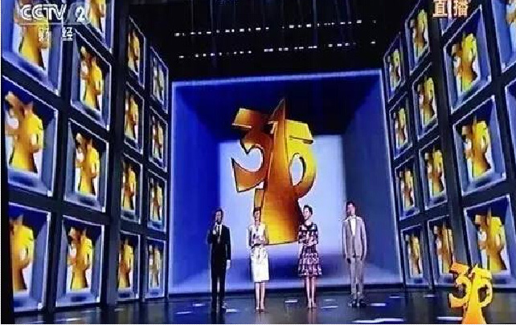

2016-3-29 来源：全盛资本 作者：全盛资本
3月15日，全盛资本集团刘阳先生受邀参加了中央电视台3·15晚会的直播。作为金融创新服务模式的代表，刘阳先生在现场也深切感受到金融行业诚信态度与社会责任对于推动整体社会经济发展的重要性，要身体力行的进行诚信精神建设，树立良好的行业风气。
虽然此次3·15晚会没有金融从业品牌被曝出诚信问题，但当前以互联网金融创新为首的金融产业变革正处于方兴未艾野蛮生长的阶段，它不仅为传统金融带来了新的理念，注入了新的活力，同时也带来了新的竞争，催生了新的合作，同时，市场难免鱼龙混杂，存在着良莠不齐、真假难辨等诸多问题。
全盛金融严防风控 保障客户利益
而作为第三方金融服务这种创新服务模式的代表，全盛金融自成立伊始就将如何为客户筛选、匹配最适宜其的金融产品作为平台使命。在产品结构与服务模式的创新探索过程中恪守诚实守信、真诚服务、社会责任的3·15精神，整合诸多金融机构的优质产品，为客户提供投融资、保险、消费金融以及支付等方面的一站式解决方案。
全盛金融作为平台方，自身不生产产品，没有资金池。对于这类平台型的服务机构，保障客户利益的最好风控手段就是选择优质的交易对手。全盛金融在全国上千家合作机构中进行严格的筛选，只上架通过多维度考量后，优质的理财、信贷、保险等产品。只有这样才能最大限度的规避风险，从而保护客户的利益。
全盛金融持续推进大众金融知识普及教育
作为金融服务从业者，刘阳董事长在面对大众投资人因投资不慎导致财富蒸发的新闻时总是痛心疾首。为能减少这些投资损失，其一方面拓展全盛金融平台的覆盖面，让更多的客户享受到优质的金融服务。另一方面也不断开展大众金融知识普及教育，提高客户风险防范意识。让更多人看清、看懂自己所面对的金融产品。
全盛金融还将携旗下近五百家店面深耕渠道建设，履行社会责任，弘扬金融创新行业正能量，充分发挥平台信息中介作用。严风控有担当，优服务更用心，抵制虚假不良之风，与众多机构共同为创建气正风清的金融服务环境尽心尽力。
京ICP备13001704 Copyright ©2009 All Rights Reserved
全盛金融超市 400-8786-730 北京市朝阳区融科望京中心A座10层